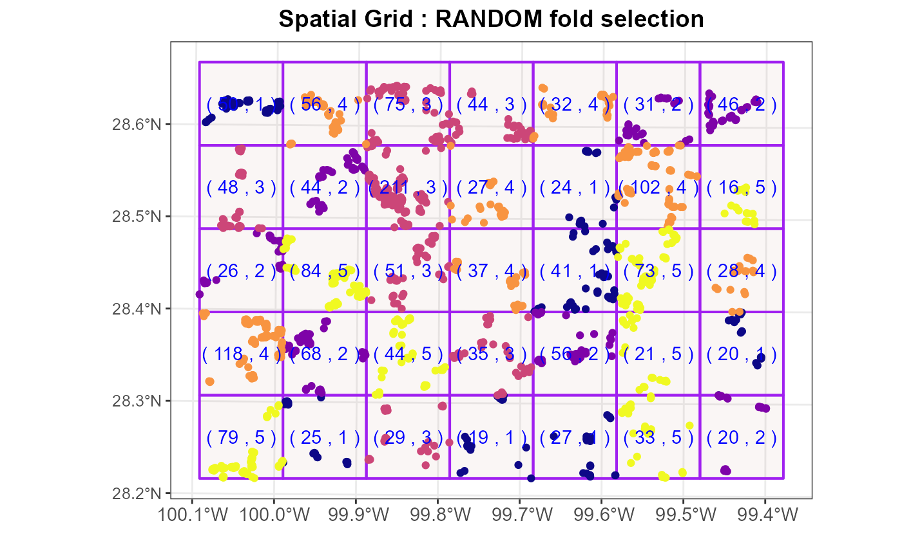

Create the spatial rectangular grids. This function results is similar to `Generate Tessellation` tool in ESRI's ArcGIS software but only square or rectangle polygons are possible. The extent of the point coordinates is #' divided into number of possible grids based on the values of `cellsize`. The cellsize is the length and width of polygon to be created.
input data set one of sp, sf
size of cell or grid to be created. This could be the range
(distance) obtained from the fit_variogram, multiple_variogram
(optional) offset distance in projection unit
(logical) TRUE for plotting grid and FALSE otherwise
an option to select observations within the grid(cellsize) three options are valid: `default`, `random`, and `systematic`.
(integer) the value defining the number of groups of grids out of total grids.
result is the list of `plot`, `sf` grid, and `tbl_df`, `tbl`, and `data.frame`
The spatial grid sample generates tessellation or fishnet in ESRI's ArcGIS software, Currently only sp and sf data are allowed. The grid shows the number of samples within the grid and grid number e.g. (80,1). The `default` selection numbers the grids from bottom left and increases row wise. `random` selection assigns the grid number randomly. The `systematic` grid numbering happens from bottom right and column wise.
The `random` selection as its' name applies select grids randomly, and `systematic` selection option allows to select the grids sequentially up to `k`
Pebesma, E., 2018. Simple Features for R: Standardized Support for Spatial Vector Data. The R Journal 10 (1), 439-446, https://doi.org/10.32614/RJ-2018-009
lcdat <- landcover
set.seed(1318)
spg <- spatial_grid_sample(data = lcdat, cellsize = c(10000,10000),
show_grid = TRUE, fold_selection = "random", k = 5)
#>
#> Attaching package: 'rlang'
#> The following objects are masked from 'package:purrr':
#>
#> %@%, as_function, flatten, flatten_chr, flatten_dbl, flatten_int,
#> flatten_lgl, flatten_raw, invoke, splice
#> Warning: attribute variables are assumed to be spatially constant throughout all geometries

if (FALSE) {
tgrid<- spatial_grid_cv(data = train,cellsize = c(10000, 10000),showGrids = TRUE,
fold_selection = "random", k = 6)}